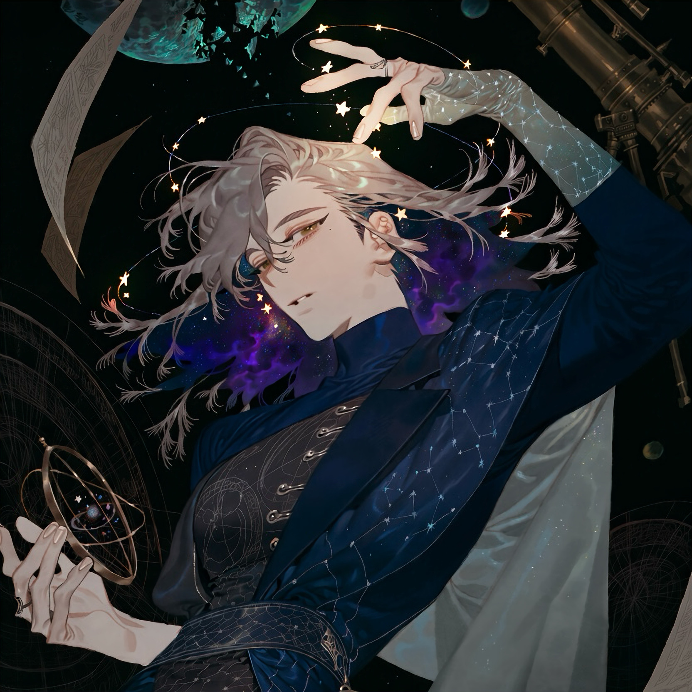

CHARACTER RECORD / 018STATUS: AVAILABLE

✦IMAGE
NOT FOUND
NOT FOUND
シルヴァ
✦ WITH OUTFIT
服装込み
PROMPT DATATXT / 018
masterpiece, best quality, ultra detailed, absurdres, boy, solo, adult male, mysterious celestial humanoid,
1.5::small floating stars orbiting around his head, several tiny luminous five-pointed stars suspended at different heights around his temples and crown, miniature stars following curved orbital paths, delicate golden-white starlight, clearly visible separate floating stars::,
1.7::hair with a miniature universe inside, cosmic inner hair, deep space visible between separated hair strands, inner layers of hair filled with swirling nebulae, tiny stars and distant galaxies embedded inside the hair, outer hair surface contrasting with the luminous cosmic interior::,
1.4::thin eyebrows, narrow delicate eyebrows, softly angled eyebrows::,
medium-length layered silver-gray hair, asymmetrical curtain fringe, wind-separated locks, slightly longer hair behind the ears, outward-curving side strands, fine feathered tips, pale moonlit outer hair, deep midnight-blue inner layers, luminous violet nebulae and turquoise star clusters visible within the hair, subtle cosmic gradients confined to the inner hair, tiny constellations drifting beneath translucent strands,
pale cool-toned skin, narrow sleepy eyes, muted gold irises with tiny star-shaped highlights, faint dark circles, long eyelashes, sharp nose bridge, subtle beauty mark beneath one eye, calm absent-minded expression, slightly parted lips, slender elongated fingers, lean elegant physique,
1.5::original celestial illusionist design, astronomical instrument motifs, refined eccentric silhouette::,
high-neck midnight-blue tailored coat with a split asymmetric collar, one shoulder draped with translucent star-chart fabric, fitted charcoal waistcoat embroidered with fine orbital diagrams, silver thread tracing miniature constellations along the seams, layered inner panels resembling folded observatory charts, narrow pale-gold piping, asymmetrical waist sash, small antique brass astrolabe attached to the belt, crescent-shaped metal fasteners, glass pendulum ornaments, star-map lining visible inside the coat tails, fitted dark trousers, pointed ankle boots with metallic heel details, delicate rings engraved with planetary symbols, one long translucent glove patterned with faint constellations, midnight blue, silver-gray, muted violet, pale turquoise, antique gold accents, matte wool, translucent organza, brushed silver,